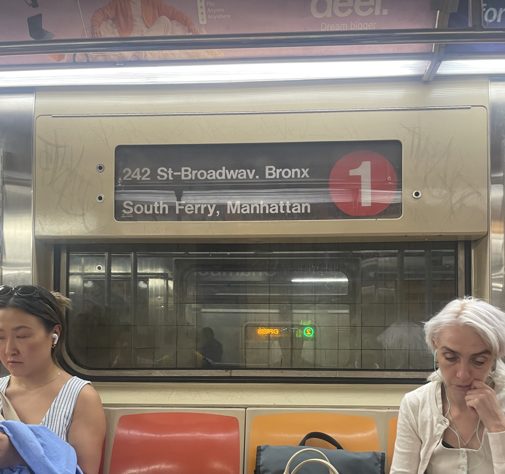
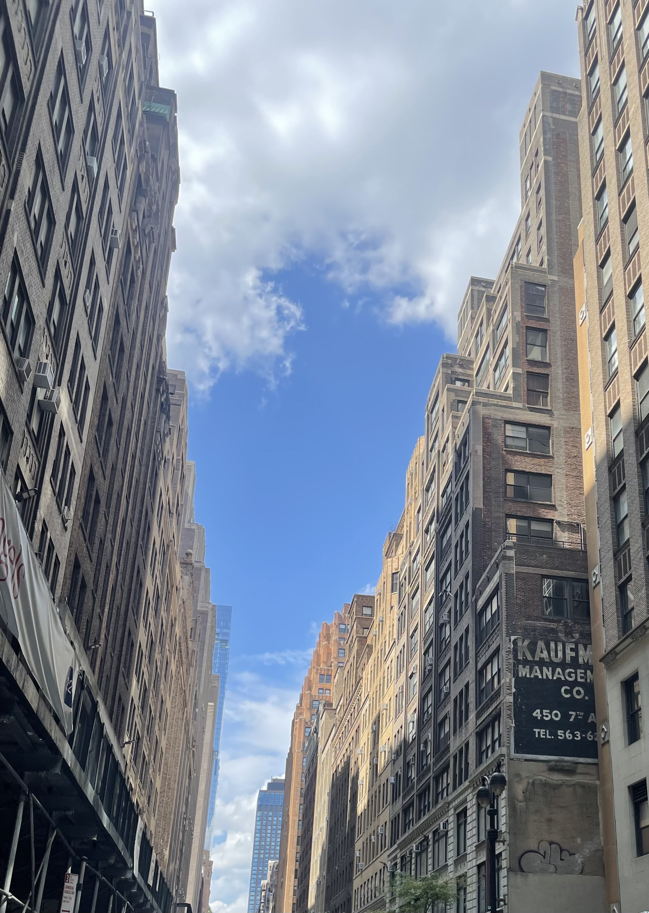

35mm
„Film has a soul. Digital is math.“
There’s something genuinely magic about loading a roll of film, winding the lever, and knowing you only have 36 chances to get it right. Unlike shooting digital, where the screen gives you instant validation, analog photography forces you to slow down. You can’t just spray and pray; you have to think about every single frame, visualize the light, and commit.
And then comes the best (and most nerve-wracking) part: the waiting. That lingering uncertainty from the moment you drop off the roll until you finally hold the negatives or prints in your hand. It’s that gap between anticipation and reality that makes every keeper feel earned—and reminds you why photography used to feel like a craft.

